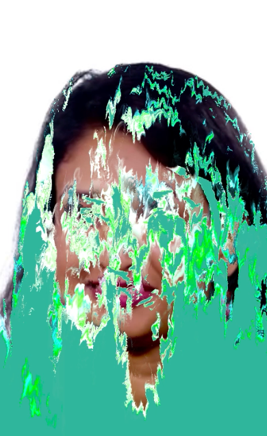
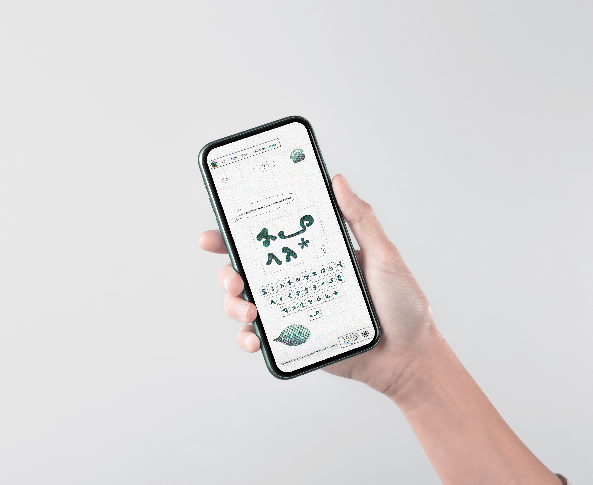
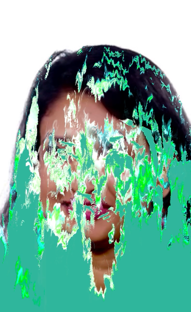
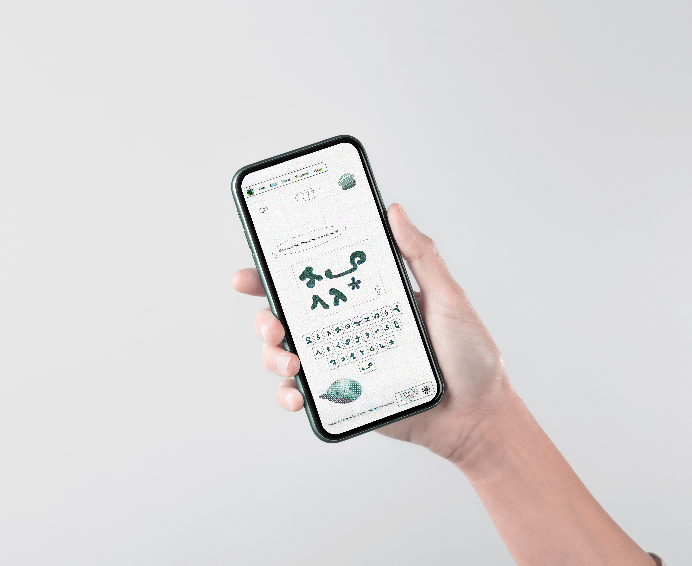

Music Visualiser,
2024
A self initiated series of motion components exploring music through visual storytelling. Compiled in AfterEffects into a format ideal for mobile based media. The project consists of hand-drawn stop-motion animation elements and an audio reactive network I built in TouchDesigner, incorporating a low-poly 3D model I created in Blender.


The Modulation,
2023
For this project I designed a user-unfriendly interface, working across a range of Adobe Creative Cloud softwares; I composed a video run-through perspective of a mobile virus being downloaded then hijacking a device. The brief I was given was: Reinterpret a classic piece of literature for a modern audience. I chose the Metamorphosis- an absurd story in which a man wakes one day to discover he is a beetle. This inspired the idea of a computer being taken over by a bug. AKA a virus, intended to disturb the monotony of everyday life for the victim, disrupting cellular communications and highlighting our increasingly complete dependance on computerised devices.

  
  Exhibition Direction,
2022
As Art Director, working within a team of students across a range of disciplines, this project consisted of planning a concept for an exhibition for curators at Manchester Art Gallery. Our team presented ‘Talking to Tomorrow’, an exhibition exploring the shared imagination of the team and visitors to the gallery, when posed with the question: What will life look like 100 years from now? A common question to arise was surrounding the impact of ai and other technology on our everyday lives. With an optimistic outlook we designed interactive and playful installations to explore exciting potentials. With this in mind I designed the posters advertising the exhibition with ai image generation tools.


Visual Identity,
2024
The 2024 Penguin Design Challenge asked designers to provide a cover for Atomic Habits, a non-fiction text, teaching readers to create change in their lives through the immense power built upon the impact of small, seemingly inconsequential habits. I created a visualisation of this process using a technique by instancing small marks of colour through a noise pattern in the software TouchDesigner. The result is a form with fluid movement, a system taking on properties which differ to those of its' individual components, inspired by the concept of emergence.